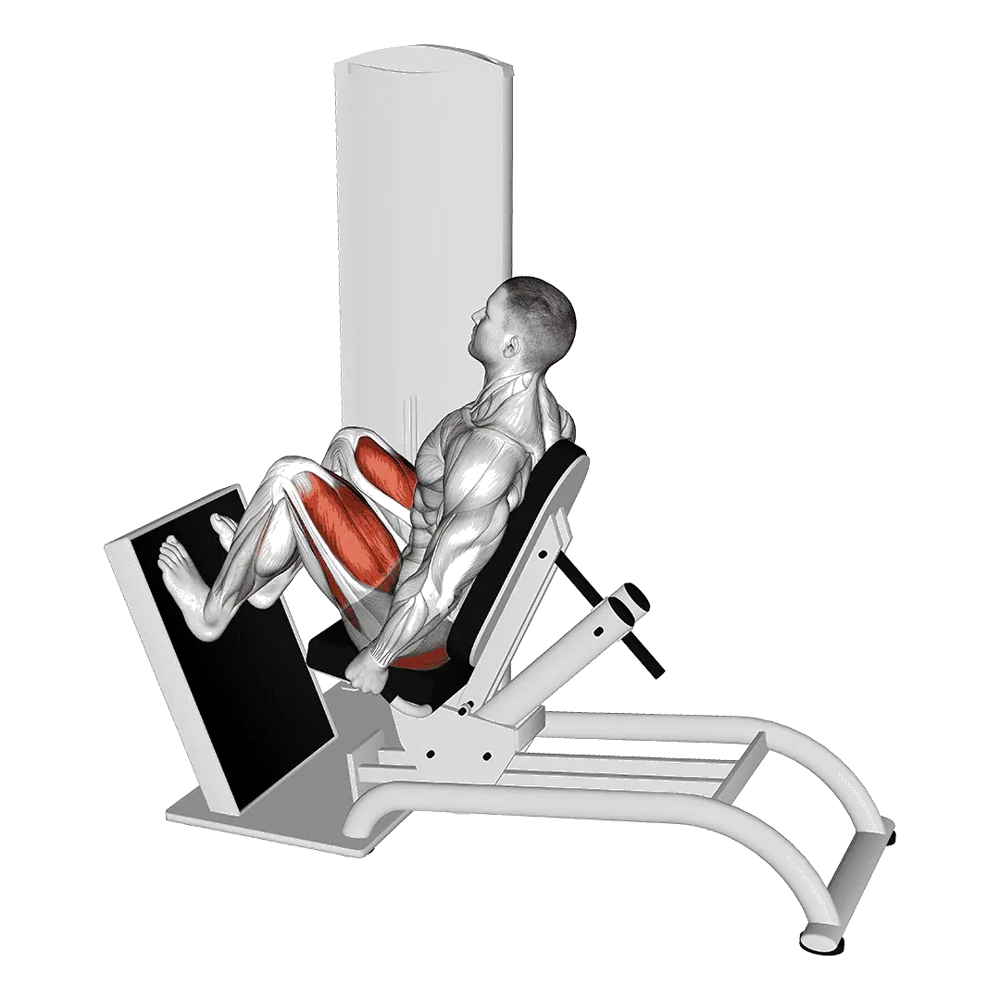

Horizontal leg press
Horizontal leg press menampilkan berat rata-rata dan standar kekuatan sebagai referensi untuk kategori kaki. Otot utama: Quadriceps, Gluteus maximus.

Berat rata-rata: Menengah
Acuan untuk level menengah.
Pria
425 lb
Wanita
258 lb
Berat rata-rata Horizontal leg press [1RM]
| Level | ||
|---|---|---|
| Dasar | 156 lb | 82 lb |
| Pemula | 271 lb | 156 lb |
| Menengah | 425 lb | 258 lb |
| Mahir | 614 lb | 386 lb |
| Pro | 826 lb | 532 lb |
Catatan: standar ini adalah estimasi 1RM berdasarkan lifter rata-rata. Berat badan, usia, dan faktor pribadi lain dapat memengaruhi hasil. Lihat data detail pada tabel di bawah.
Standar kekuatan Horizontal leg press (lb)
Pria berdasarkan berat badan (lb) [1RM]
| Berat badan | Dasar | Pemula | Menengah | Mahir | Pro |
|---|---|---|---|---|---|
| 110 | 80 | 158 | 269 | 408 | 568 |
| 120 | 95 | 180 | 296 | 442 | 608 |
| 130 | 111 | 201 | 323 | 474 | 646 |
| 140 | 126 | 221 | 348 | 505 | 682 |
| 150 | 141 | 241 | 373 | 535 | 716 |
| 160 | 156 | 260 | 397 | 563 | 749 |
| 170 | 171 | 279 | 420 | 591 | 781 |
| 180 | 185 | 297 | 443 | 617 | 811 |
| 190 | 199 | 315 | 464 | 643 | 840 |
| 200 | 213 | 332 | 486 | 668 | 869 |
| 210 | 227 | 349 | 506 | 692 | 896 |
| 220 | 240 | 366 | 526 | 715 | 923 |
| 230 | 253 | 382 | 545 | 738 | 948 |
| 240 | 266 | 398 | 564 | 760 | 973 |
| 250 | 279 | 414 | 583 | 781 | 997 |
| 260 | 291 | 429 | 601 | 802 | 1021 |
| 270 | 304 | 444 | 618 | 822 | 1044 |
| 280 | 316 | 458 | 636 | 842 | 1066 |
| 290 | 328 | 472 | 652 | 861 | 1088 |
| 300 | 339 | 486 | 669 | 880 | 1109 |
| 310 | 351 | 500 | 685 | 899 | 1130 |
Pria berdasarkan usia [1RM]
| Usia | Dasar | Pemula | Menengah | Mahir | Pro |
|---|---|---|---|---|---|
| 15 | 133 | 231 | 362 | 523 | 703 |
| 20 | 152 | 264 | 415 | 598 | 805 |
| 25 | 156 | 271 | 425 | 614 | 826 |
| 30 | 156 | 271 | 425 | 614 | 826 |
| 35 | 156 | 271 | 425 | 614 | 826 |
| 40 | 156 | 271 | 425 | 614 | 826 |
| 45 | 148 | 257 | 404 | 582 | 784 |
| 50 | 139 | 242 | 379 | 547 | 735 |
| 55 | 129 | 223 | 350 | 506 | 680 |
| 60 | 118 | 204 | 320 | 461 | 621 |
| 65 | 106 | 184 | 289 | 417 | 561 |
| 70 | 95 | 165 | 259 | 374 | 503 |
| 75 | 85 | 148 | 232 | 335 | 450 |
| 80 | 76 | 132 | 207 | 299 | 402 |
| 85 | 68 | 118 | 186 | 268 | 361 |
| 90 | 62 | 107 | 167 | 242 | 325 |
Wanita berdasarkan berat badan (lb) [1RM]
| Berat badan | Dasar | Pemula | Menengah | Mahir | Pro |
|---|---|---|---|---|---|
| 90 | 51 | 109 | 194 | 303 | 429 |
| 100 | 58 | 119 | 207 | 319 | 449 |
| 110 | 64 | 128 | 219 | 334 | 467 |
| 120 | 71 | 137 | 231 | 349 | 483 |
| 130 | 77 | 146 | 242 | 362 | 499 |
| 140 | 82 | 154 | 252 | 374 | 514 |
| 150 | 88 | 161 | 262 | 386 | 527 |
| 160 | 93 | 169 | 271 | 397 | 541 |
| 170 | 99 | 175 | 280 | 408 | 553 |
| 180 | 104 | 182 | 288 | 418 | 565 |
| 190 | 109 | 189 | 296 | 428 | 576 |
| 200 | 113 | 195 | 304 | 437 | 587 |
| 210 | 118 | 201 | 312 | 446 | 598 |
| 220 | 122 | 207 | 319 | 455 | 608 |
| 230 | 127 | 212 | 326 | 463 | 617 |
| 240 | 131 | 218 | 333 | 471 | 627 |
| 250 | 135 | 223 | 339 | 479 | 636 |
| 260 | 139 | 228 | 346 | 487 | 644 |
Wanita berdasarkan usia [1RM]
| Usia | Dasar | Pemula | Menengah | Mahir | Pro |
|---|---|---|---|---|---|
| 15 | 70 | 133 | 220 | 329 | 453 |
| 20 | 80 | 152 | 252 | 376 | 518 |
| 25 | 82 | 156 | 258 | 386 | 532 |
| 30 | 82 | 156 | 258 | 386 | 532 |
| 35 | 82 | 156 | 258 | 386 | 532 |
| 40 | 82 | 156 | 258 | 386 | 532 |
| 45 | 78 | 148 | 245 | 366 | 504 |
| 50 | 73 | 139 | 230 | 344 | 473 |
| 55 | 68 | 129 | 213 | 318 | 438 |
| 60 | 62 | 117 | 194 | 290 | 400 |
| 65 | 56 | 106 | 175 | 262 | 361 |
| 70 | 50 | 95 | 157 | 235 | 324 |
| 75 | 45 | 85 | 141 | 210 | 290 |
| 80 | 40 | 76 | 126 | 188 | 259 |
| 85 | 36 | 68 | 113 | 169 | 232 |
| 90 | 32 | 61 | 102 | 152 | 209 |
Catatan: barbell standar di gym umumnya berbobot 44 lb.
Otot yang dilatih
| Grup | Otot |
|---|---|
| Otot utama | Quadriceps, Gluteus maximus |
| Otot pendukung | Hamstring |
| Otot stabilisator | Oblique eksternal |
| Grip | Tidak ada |
Catat dan analisis di aplikasi Shiba
Lihat beban, repetisi, dan perkembangan di satu tempat.
Cara membaca tabel
| Level | Deskripsi | Distribusi |
|---|---|---|
| Dasar | Menguasai teknik yang benar dan berlatih konsisten minimal 1 bulan. | Bawah 5% |
| Pemula | Berlatih konsisten minimal 6 bulan. | Atas 80% |
| Menengah | Berlatih konsisten lebih dari 2 tahun. | Atas 50% |
| Mahir | Berlatih terencana lebih dari 5 tahun. | Atas 20% |
| Pro | Menekuni latihan ini secara khusus lebih dari 5 tahun. | Atas 5% |